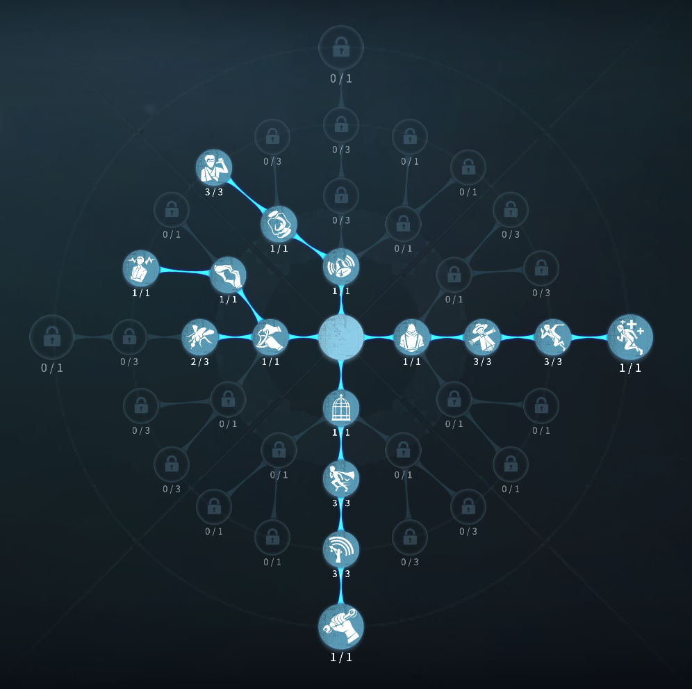
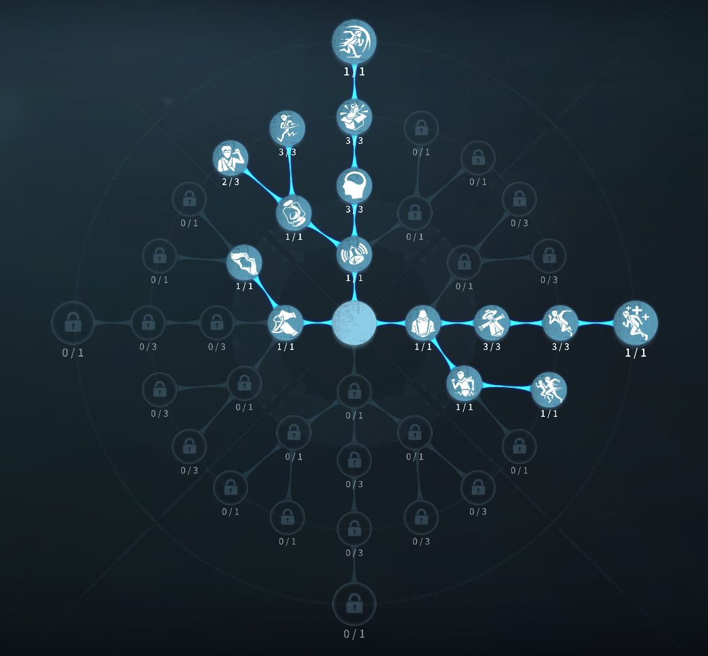

騎士の評価
ハンターの行動をすべてを制御
外在特質と特徴
特質1:人物同化
・「騎士」は違う人物を演じることに夢中だ。演繹中は本物の騎士と同化作用が起こり、ヘルメットを被っている間騎士専用の特質を得る。特質2:戦術予見
・「騎士」は13メートル以内で最も近くにいるハンターがその後8秒以内に行う2回の行動を予測することができる。予測に正解するとハンターに戦術制約を与え、自身を奮起させて2秒間持続する40%の移動速度上昇効果を獲得する。・ハンターに他の追撃対象がいる時、そのハンターに対する「騎士」の戦術予見時間が8秒から5秒に減少し、攻撃とスキルに対する制約効果が弱まる。
特質3:戦術制約
攻撃：ハンターの意図的な通常攻撃または溜め攻撃が予測された場合、今回の攻撃は阻止され、ハンターは自身の武器を見直し始める。
スキル：
ハンターの意図的なスキル使用が予測された場合、今回のスキル発動は阻止され、その後6秒間スキルが使用できなくなる。
現状維持：
ハンターが2段階目の戦術予見期間中に攻撃またはスキルを使用しなかった場合、それを予測した「騎士」は意志を固め、その後4秒以内に受ける次のダメージが通常攻撃の半分まで減少する。
・「騎士」が仲間を救援する際、発動済みの戦術予見が無効になる。
特質4:栄誉共鳴
・「騎士」は8メートル以内でロケットチェアに拘束されたサバイバーと栄誉共鳴を行うことができる。・「騎士」とロケットチェアの間にオブジェクトがある場合、オブジェクトは貫通できない。
・ロケットチェアに拘束されたサバイバーが共鳴を受けると、ロケットチェアから脱出することができる。
・栄誉共鳴での救助モーション中に通常攻撃及び通常攻撃扱いされる攻撃を食らうと恐怖の一撃となる。栄誉共鳴での救助に回数制限はない。
・初めて栄誉共鳴が完了すると、双方がその後8秒以内に受ける次のダメージがハンターの通常攻撃の半分まで減少するを獲得する。
特質5:機械音痴
・暗号機解読速度が15%低下する。特徴
ハンターの行動を予測して攻撃、スキルを封鎖できる。救助の際双方が通常攻撃の半分に抑えられるのは最もの強み
危機一髪採用なしでも良いところが強い
基本的な立ち回り方
1. 追われた時
ヘルメットを使って延ばそう！
攻撃とスキルの読みあいが発生するので、ハンターが今の状況で使いたい方を選択しよう！
上手いハンターの場合スキルを空打ちしてくるので気を付けよう！
2. 追われない時
解読をする。
救助に行く場面では、距離詰めのアイテムではないので、早めに救助に行こう！
また、中間で見つかった場合ヘルメットを使って近づこう！
救助恐怖だけ気を付けておこう！
またダブルチェイスの時は、ヘルメット使って補佐してあげよう。
おすすめの内在人格
危機一髪型人格
この内在人格は癒合に人格を振ることで自動で治療ゲージを貯め、治療しやすくし、卯化効果で解読を少し早くする

フライホイール型人格
この内在人格は、負傷からも板、窓乗り越えを早くして、チェイスを伸ばす


みんなのコメント